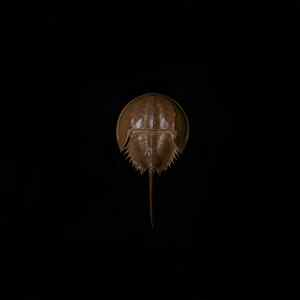

 Awakened by Decay – 1 Mile North
This recent release floats up out of a yawning gap, so let’s back up the story a little for anyone who lost the thread. 1 Mile North’s first album, Glass Wars, was a collection of pretty guitar cogitations a little reminiscent in places of some of the quieter moments on How Strange Innocence, the first album by Explosions in the Sky from a year earlier. At the time it was one of quite a few of its kind floating around at the gently lyrical end of the post-rock spectrum. It was the second album, Minor Shadows, released two years later in 2003, that made me sit up and take notice. While somewhat similar in feel to its predecessor, it achieved an increased tautness and sense of purpose and space, moving deftly from sparse beauty to wistful, melancholy drift to occasional pockets of darkness. It did not sound quite like any of its rivals, and it remains one of my most-returned-to albums from the post-rock binge that filled a chunk of my hard drive around that time. It’s a lonely, fragile, contemplative work, and the haunting opener “In 1983 he loved to fly” is to my ear perhaps its finest moment.
Read more »
By David Smith. Posted in Ambient, Analysis and Opinion, Classical, Dance, Drone, Electronic, Experimental, Jazz, Post-Rock, Techno, Vital Albums, World | No Comments »
Here is my top 20 music releases for 2015, with no claim that they are somehow objectively the best or that I listened to everything anyone else did. I have found things that delighted me on other people’s lists, and the point of the exercise is not to replicate or compete with those lists but to highlight some things you may not have found, things that might delight you. The sequence changed every time I made a shortlist, so take the numbers with a pinch of salt – all of them could be at least plus or minus 5 on a given day.
Read more »
Jenny Hval – Apocalypse, girl
Norwegian Jenny Hval makes experimental music made up of gentle, often ethereal, synths and uncompromising lyrics focusing on sex, gender, aging, religion, and other deep personal subjects (the word “cunt” is startlingly used on multiple tracks). This combination of the otherworldly and fully human creates an unsettling, fascinating whole. Apocalypse, girl, Hval’s third release under her own name, she previously recorded as Rockettothesky and along with Håvard Volden as Nude on Sand, is her best work to date. In fact, much of Apocalypse, girl merges all the above topics into one massive exploration of the female condition. This is not music for idle listening, but requires time and focus. That time and focus are rewarded, however, with one of the most lyrically interesting albums of the year thus far.
Read more »
The Tallest Man on Earth – Dark Bird is Home
Swede Kristian Matsson has been making singer/songwriter folk as The Tallest Man on Earth since 2006, but Dark Bird is Home is easily his grandest. Featuring a full band for the first time, including horns and even some electronics, Matsson has added a richness and depth to his music that often puts the album more in the vein of The Decemberists than his usual comparison of Bon Iver. His true strength, however, remains as a poet, and the album is chock full of wordplay like “And I’ve already grown up here, here I might as well grow down” (from “Little Nowhere Towns”). This combination of orchestration and lyrics makes Dark Bird is Home an absolute gem.
Read more »
 Sufjan Stevens – Carrie & Lowell
Sufjan Stevens – Carrie & Lowell
If there were questions as to the direction Sufjan Stevens would take after the departure from the norm that was Age of Adz, naming his new album after his mother and stepfather (his first album since his mother’s passing, mind you) answered those questions load and clear: Sufjan Stevens is looking back, which means a return to lovely, gentle indie folk. Carrie & Lowell strips away both the electronics of Adz and the lush orchestration of Come on Feel the Illinoise, putting the focus squarely on Sufjan’s lyrics, which come heavily from his life. This album is going inspire a lot of reminiscing, particularly amongst those who have lost parents, and is going to cause a lot of tears. They’ll be happy tears, though, so it’s unlikely people will be complaining.
Read more »
This is the second and concluding part of an interview with Jayne Amara Ross and Frédéric D. Oberland of the Parisian band FareWell Poetry. Read the first part here.
Jayne, are there any moments in the album where the shape the music has taken added something to your sense of the poetry you had written?
Yes definitely, we try to create pieces where each individual element (the poetry, the music, the films) stand alone but work as a whole also. When we have done a good, thorough job every element should enrich the other. It is only when all the mediums align behind the same very precise objective that you get that feeling of something whole, and enveloping. I wouldn’t, however, rely on the music to give meaning to the poetry or the films. Music is able to sublimate and carry meaning but not to impose it. At its best, it can be the wondrous, intoxicating glue that holds everything together. In all my films, including those that I have made outside FareWell Poetry, music is a really important part and I have always shared a privileged dialogue with the musicians that I have worked with. You can also go really wrong when you add music to film, you can easily trip yourself up by making the wrong choices. Having a close relationship with the composer, and learning to communicate in their ‘language’ can help prevent this.
Read more »

In the closing months of 2011, a new band from Paris called FareWell Poetry leapt from obscurity to a prominent place on various best-of-2011 lists, thanks to their arresting debut album Hoping for the Invisible to Ignite. (Read a review and stream the music here). Weaving together spoken word, a literary narrative backdrop, film, and compelling, slow-burning instrumental soundscapes, the album combined a high-art conceptual seriousness with an accessible musical appeal. It evidenced a capacity to delight and move and fascinate while appealing to the intellect as well as the gut, allowing the listener to be carried away by the guitar crescendos or ponder the poetic allusions or both at once. Jayne Amara Ross composed and performed the poetry and directed the accompanying film. Frédéric D. Oberland (whose recent collaboration with Richard Knox, The Rustle of the Stars, is also excellent), contributes guitar, fender rhodes, piano, harmonium, soundscapes. Stéphane Pigneul on bass, Eat Gas on guitar, Stanislas Grimbert on drums, and Colin JohnCo providing analog electronics complete the line-up. Jayne and Frédéric kindly agreed to talk to us about how the debut album came about, about the band’s creative process, and about plans for the next release.
Read more »
Here as elsewhere, 2011 finished with the customary best-of-year lists, inevitably confronting the dedicated music lover with large numbers of as yet unpurchased albums said to be the cream of the crop; catching up would cost a small fortune, even if 2012 held no new promises. Well, 2011 also saw the release of some excellent albums offered for free download, and a few of the Music is Good authors have put together a list of their favorites across several genres. All of the albums listed below can be downloaded either for free or on a “name your own price” basis (donations encouraged, but with no minimum) from the artists or labels or at bandcamp. You can also stream some of them below. Our thanks to these artists for making such good music freely available.
Read more »

Hoping for the Invisible to Ignite by Parisian collective FareWell Poetry is one of the more absorbing musical journeys of 2011. It is also an album that wears its ambition on its sleeve. A Super 8/16mm black and white film on DVD (trailer here), filled with images of compulsive self-absorption and erotic obsession (warning: nudity), accompanies the 20 minute opening piece, and there’s also an iPhone app to go alongside both. The lyrics take the form of extravagant spoken-word poetry boasting a lofty lineage:
‘As True As Troilus’ takes its title and mythology from Chaucer’s important 14th century poem ‘Troilus and Criseyde’, a retelling of a ‘faux’ Greek myth with Medieval origins, in which the main protagonist Troilus falls in love with Trojan Cressida who finally deceives and leaves him for the Greek soldier Diomedes. The narrator of ‘As True As Troilus’ (just as Chaucer’s narrator) uses this myth to explore his own romantic mythology, using the characters and their situation to recount his own plight, illustrating the destruction of his own failed relationship with tableaux from the Trojan tale.
Act 3, Scene 2 of Shakespeare’s Troilus and Cressida, which portrays the same doomed love affair, also plays a role, and Ovid is cited in the film. Described on the band’s site as a “bold and electrifying project,” we are left in no doubt that this is a work of substance.
Read more »

{kind=link}
{kind=link}